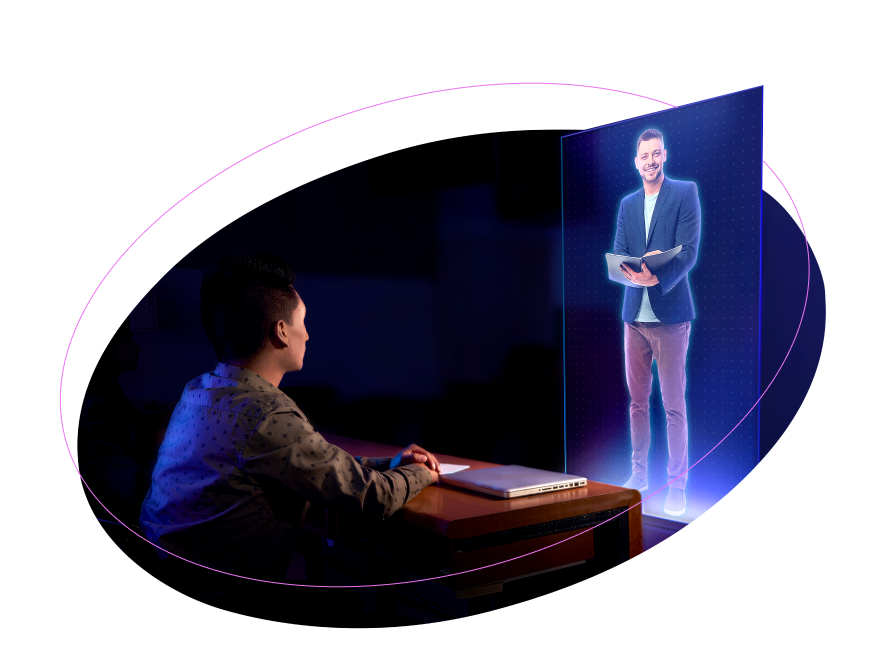

CARRERA PROFESIONAL DE INGENIERIA DE SISTEMAS E INFORMATICA
Ingeniería de Sistemas e Informática
Con una metodología educativa centrada en la experiencia y la práctica, con profesores especialistas en su campo y acuerdos internacionales que ofrecen una perspectiva global de la profesión.
Selecciona el campus y conoce las modalidades disponibles:
Ingeniería de Sistemas e Informática Para los que quieren
Impulsar la innovación mediante el uso de la tecnología, la digitalización y la automatización para cambiar el mundo, con una visión emprendedora, que permita planificar, gestionar y liderar grandes proyectos informáticos.
RAZONES
EXPERIENCIA
Conoce la experiencia de estudiar Ingeniería de Sistemas e Informática Obtén una visión global y emprendedora para planificar, liderar proyectos informáticos y evaluar la implementación de infraestructuras tecnológicas digitales empleando enfoques de Ingeniería de software y herramientas que garanticen productos de calidad.
Convenios Internaciones Contamos con membresias

Experiencia y Conocimiento Laboratorio Softwares y simuladores
CONVENIOS
Conoce nuestros
Convenios Internacionales Contamos con un convenio de doble titulación y varios convenios de intercambio estudiantil.